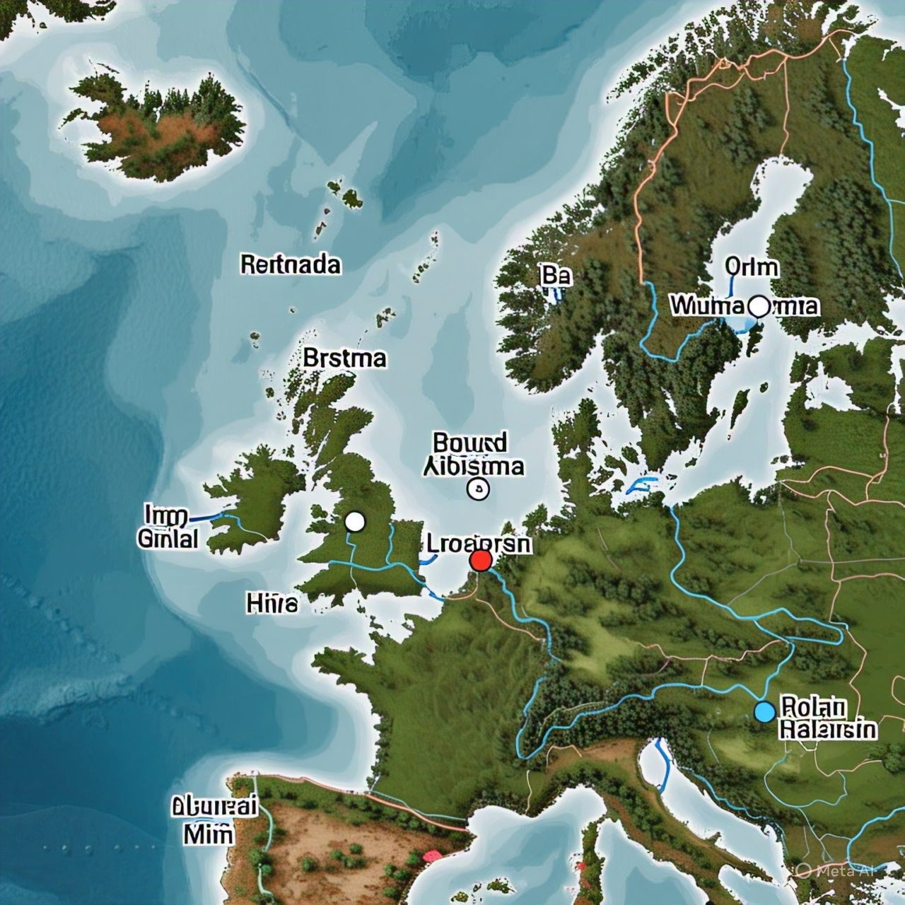
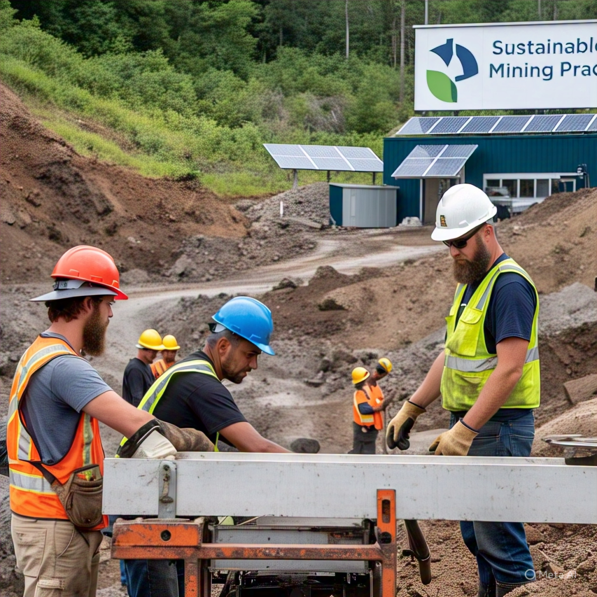

Our Mining Operations
Strategic locations across Sweden's mineral-rich regions
Strategic Mineral Extraction
frontier Mining co. operates six mines across Sweden, specializing in iron ore, rare earth elements, and industrial minerals. Our operations combine cutting-edge technology with responsible environmental practices.

Kiruna
Bergslagen
Active Mining Projects
Sustainable Practices
At frontier Mining co., we're committed to minimizing our environmental impact through innovative reclamation techniques and renewable energy use.
- 100% of our mines use renewable energy
- Comprehensive water recycling systems
- Progressive reclamation during operations
- Wildlife habitat preservation programs

Innovative Mining Technology

AI Monitoring
Machine learning algorithms optimize extraction and detect equipment issues early.